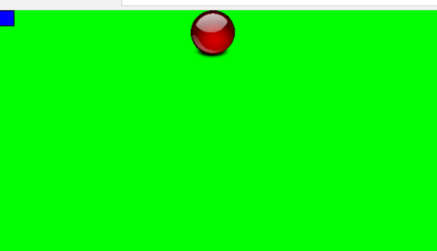

下面這個是一個會跑的球的程式碼，案空白鍵可以暫停，也可以上下移動，案r可以往返像跑，滑鼠點會順移到滑鼠位子
from ggame import (
App,
Color,
Sound,
LineStyle,
Sprite,
RectangleAsset,
ImageAsset,
CircleAsset,
EllipseAsset,
PolygonAsset,
SoundAsset,
)
myapp = App()
# define colors and line style
green = Color(0x00ff00, 1)
black = Color(0, 1)
noline = LineStyle(0, black)
# a rectangle asset and sprite to use as background
bg_asset = RectangleAsset(myapp.width, myapp.height, noline, green)
bg = Sprite(bg_asset, (0,0))
# A ball! This is already in the ggame-tutorials repository
ball_asset = ImageAsset("images/orb-150545_640.png")
ball = Sprite(ball_asset, (0, 0))
# Original image is too big. Scale it to 1/10 its original size
ball.scale = 0.1
# custom attributes
ball.direction = 10
ball.go = True
# Sounds
pew1_asset = SoundAsset("sounds/pew1.mp3")
pew1 = Sound(pew1_asset)
pop_asset = SoundAsset("sounds/reappear.mp3")
pop = Sound(pop_asset)
# reverse - change the ball direction
def reverse(b):
#pop.play()
b.direction *= -1
def ball_y_down():
ball.y += 3
def ball_y_up():
ball.y -= 3
# Set up function for handling screen refresh
def step():
if ball.go:
ball.x += ball.direction
if ball.x + ball.width > myapp.width or ball.x < 0:
ball.x -= ball.direction
reverse(ball)
# Handle the space key
def spaceKey(event):
ball.go = not ball.go
# Handle the "reverse" key
def reverseKey(event):
reverse(ball)
def ballDown(event):
ball_y_down()
def ballUp(event):
ball_y_up()
# Handle the mouse click
def mouseClick(event):
pew1.play()
ball.x = event.x
ball.y = event.y
# Set up event handlers for the app
myapp.listenKeyEvent('keydown', 'space', spaceKey)
myapp.listenKeyEvent('keydown', 'r', reverseKey)
myapp.listenMouseEvent('click', mouseClick)
myapp.listenKeyEvent('keydown', 'down arrow', ballDown)
myapp.listenKeyEvent('keydown', 'up arrow', ballUp)
myapp.run(step)

而我需要上下移動的功能的話，我先把其他用不到的刪掉如下
from ggame import (
App,
Color,
Sound,
LineStyle,
Sprite,
RectangleAsset,
ImageAsset,
CircleAsset,
EllipseAsset,
PolygonAsset,
SoundAsset,
)
myapp = App()
bg = Sprite(bg_asset, (0,0))
ball_asset = ImageAsset("images/orb-150545_640.png")
ball = Sprite(ball_asset, (0, 0))
ball.scale = 0.1
# custom attributes
ball.direction = 10
def ball_y_down():
ball.y += 3
def ball_y_up():
ball.y -= 3
# Set up function for handling screen refresh
def step():
pass
def ballDown(event):
ball_y_down()
def ballUp(event):
ball_y_up()
myapp.listenKeyEvent('keydown', 'down arrow', ballDown)
myapp.listenKeyEvent('keydown', 'up arrow', ballUp)
myapp.run(step)
我還需要左右的性能，所以模仿(上下)的指令做出如下
from ggame import (
App,
Color,
Sound,
LineStyle,
Sprite,
RectangleAsset,
ImageAsset,
CircleAsset,
EllipseAsset,
PolygonAsset,
SoundAsset,
)
myapp = App()
bg = Sprite(bg_asset, (0,0))
ball_asset = ImageAsset("images/orb-150545_640.png")
ball = Sprite(ball_asset, (0, 0))
ball.scale = 0.1
# custom attributes
ball.direction = 10
def ball_y_down():
ball.y += 3
def ball_y_up():
ball.y -= 3
def ball_x_right():
ball.x += 20
def ball_x_left():
ball.x -= 20
# Set up function for handling screen refresh
def step():
pass
def ballDown(event):
ball_y_down()
def ballUp(event):
ball_y_up()
def ballleft(event):
ball_x_left()
def ballright(event):
ball_x_right()
myapp.listenKeyEvent('keydown', 'down arrow', ballDown)
myapp.listenKeyEvent('keydown', 'up arrow', ballUp)
myapp.listenKeyEvent('keydown', 'right arrow', self.ballright)
myapp.listenKeyEvent('keydown', 'left arrow', self.ballleft)
myapp.run(step)
就可以把這個指令放進我的遊戲裡面了，可是有很多不同的語法要改